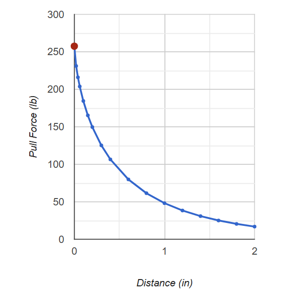

Initial Considerations
The disc magnets were purchased from K&J magnetics, their reported strengths when in conjunction with one another are depicted in the force vs distance (in) graph (pictured adjacent). The strength of these magnets poses a number of safety and design challenges. The body of the "jig" or mechanism by which the magnets will be separated must be non-ferrous. The magnets must also be secure so as not to break free from containment. The magnet jig also needed to be convenient for experimentation, having enough space for setups.